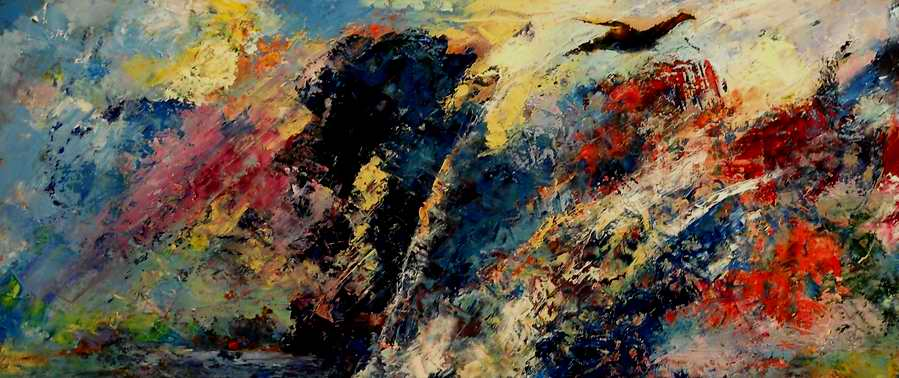

ТОРА и ЯЗЫК МУЗЫКИ
Если мы говорим о музыкальной интерпретации Торы, каким музыкальным языком мы должны пользоваться? Должны ли мы пользоваться языком музыки того времени, или имеет смысл пользоваться языком, доступным всем, основанным на европейской традиции?
Автор: Даниэль Круглов
Тора представляет собой восточный еврейский текст, где каждое слово объемно. Можно бесконечно всматриваться в него, находя все новые глубины и откровения. Когда мы говорим о соотношении такого текста и музыки, для художника важно понять - где и как они соприкасаются? Как взаимодействуют между собой?
см. также:
часть первая "МУЗЫКА и ТОРА"
музыкальная ипровизация "ДАР МИРОТВОРЕНИЯ". Даниэль Круглов
Когда мы говорим о музыке, как языке, следует сделать оговорку – в каждой культуре музыка звучит по-разному. Например для африканских культур свойственна пентатоничная музыка, в которой основным элементом является ритм, а в европейской культуре существуют монодичные церковные тоны, позже эволюционировавшие в классическую тональную гармонию.
Если мы говорим об интерпретации (посредством музыки) Торы, пришедшей из Израиля и Ближнего Востока, каким музыкальным языком мы должны пользоваться? Должны ли мы пользоваться языком музыки того времени, или имеет смысл пользоваться языком, доступным всем, основанным на европейской традиции? Думаю, современной культуре свойственно смешивать различные стили. Мне представляется правильным использовать все эти стили, как краски.
Мы можем использовать различные течения европейской музыки (симфоническая, электронная музыка, биг бит, прогрессивный рок, а может быть даже диско), а каких-то случаях могут быть использованы элементы и инструменты африканской, японской, индийской музыки, или музыки других культур.
ДАНИЭЛЬ КРУГЛОВ: муз. размышление на н.гл. Торы "Ки-Теце". Дварим /Вт./
Например, использование свирели в «Ки-Теце» /Вт.21:10-25:19/ на фоне электронного тикания часов, которое потом переходит в заведомо синтезаторную балладу, сделанную в стиле секвенсоров конца 80-х.
ДАНИЭЛЬ КРУГЛОВ: муз. размышление на н.гл. Торы "Ва-Йеце". Берешит /Быт./
В «Ва-Йеце» используется осознанно инструментарий первого диска «Genesis», как попытка описать внутренние переживания Иакова и его сон в Бейт-Эль (Вефиль) - медленная мелодия флейты на немножко торопящемся подростковом аккомпанементе.
ДАНИЭЛЬ КРУГЛОВ: муз. размышление на н.гл. Торы "Дварим". Дварим /Вт./
В отрывке Дварим /Вт.1:1-3:22/, основой является симфоническая музыка, и весь ее язык можно обозначить как симфо-рок - необходимая мне теплая торжественность с небольшим душевным надломом и слезами была получена именно с помощью выбора стиля и гармонического языка.
Что дают подобные игры со стилем?
Это развивает наш язык на столько, что мы можем показать эмоциональные явления гораздо глубже, размышляя над библейским текстом. Используя подобные краски, мы можем показать те области Торы, которые не можем выразить с помощью обычного языка, нечто, что не возможно записать и сформулировать словами.
ДАНИЭЛЬ КРУГЛОВ: муз. размышление на н.гл. Торы "Ва-Йехи". Берешит /Быт./
Кроме того в своей музыке я использую систему символов. Например, когда аккорд наслаивается на аккорд – это дает ощущение некоего ожидания, стремления к чему-то. Например, в Ва-Йехи /Быт.47:28-50:26/, где существуют аккордовые наслоения с помощью синтезаторов, переходящие в гамелан (индонезийский вид музицирования с использованием множества ударных инструментов). Можно создать эффект пребывания в неопределенном состоянии, состоянии ранимости – аккорд, который Равель очень любил использовать в своих произведениях – большой минорный нонаккорд. В особенности, я думаю, это слышно в композиции по парашат а-шавуа "Насо" /Чис.4:21-7:89/, где этническая флейта перекликается с гармоническим наполнением, и приходит в музыку надежды (часть с вокализом) в мажоре, где все инструменты как-бы подчиняются этому “мажорному” настроению надежды.
ДАНИЭЛЬ КРУГЛОВ: муз. размышление на н.гл. Торы "Насо". Бемидбар /Чис./
Подобный язык можно найти в парашат а-шавуа "Тазрия"-"Мецора" /Лев.12:1-15:33/, где в конце, подобно шумановскому “Поэт Говорит” используется реверсированный звук рояля (для создания эффекта использовался синтезатор Alchemy).
ДАНИЭЛЬ КРУГЛОВ: муз. размышление на н.гл. Торы "Тазрия" - "Мецора".Ваикра /Лев./
Также гармоническое развитие существует в парашот-а-шавуа, написанных для фортепиано - например, ВаИгаш /Быт.44:18-47:27/ или "Мишпатим" /21:1-24:18/.
ДАНИЭЛЬ КРУГЛОВ: муз. размышление на н.гл. Торы "ВаИгаш". Берешит /Быт./ ДАНИЭЛЬ КРУГЛОВ: муз. размышление на н.гл. Торы "Мишпатим".Шмот /Исх./
Кроме того, мы не можем знать каким именно был язык еврейской музыки времен написания Библии, не сохранилось никаких записей. Иногда я использую то, что мы сейчас понимаем под еврейской музыкой, которая создавалась в Восточной Европе, где жили евреи последние несколько сотен лет. В каких-то случаях используется также музыка ближнего Востока. Но о ней мы опять таки не можем знать, насколько сегодня она соответствует или близка к музыке древних времен. Нам остается только гадать, какой она была на самом деле. Скорее всего, она существенно отличалась от того, что мы имеем сегодня.
Так например даже в музыке Древней Греции не было такого понятия как октава. Греки, по современным понятиям, оперировали квартами. В общем – это совершенно другая система. Т.е., если бы кто-то из древних греков мог бы послушать нашу музыку, он ничего не понял бы. Когда я говорю о музыке, как способе интерпретировать Писание, я говорю о языке, который должен быть понятен максимальному числу людей. Известно, например, американская музыка отличается от европейской, при том, что их не разделяют тысячелетия и эти культуры близки. Хотя язык в принципе одинаков, эстетика – разная.
Когда я пишу музыку, я стремлюсь к такой музыке, которая максимально включала бы в себя достижения всех культур. Потому что, если наша цель интерпретировать Писания, т.е. сделать их в определенном смысле более понятными, то сам язык, к которому мы при этом обращаемся, должен быть понятен многим. Понятно, что музыкальная интерпретация, как и всякая другая, отрывает лишь какую-то определенную грань. Мы не можем говорить о том, что то или иное пояснение раскрывает сто процентов смыслов.

И я думаю, что музыкальная интерпретация в современном мире является максимально универсальной и действенной. Человек, воспринявший музыкальную интерпретацию принимает для себя что-то новое в сравнении даже с тем, что он открыл бы для себя огромное количество уже написанных книг и толкований. С другой стороны, человек, вопринимающий музыку, не ограничен определенным фиксированным пониманием. Он может развить свое впечатление далее. Он может пойти за какой-то музыкальной мыслью, личной реакцией и это поможет ему почувствовать Писание так, как он не чувствовал его ранее.
ДАНИЭЛЬ КРУГЛОВ: муз. размышление на н.гл. Торы "Шмини ". Ваикра /Лев./
Например, в отрывке Шмини /Ваикра (Лев.) 9:1-11:47/ мы ясно слышим грустную мелодию, хотя в отрывке нет ничего грустного. Речь в данном случае идет о “слезах Моше” - данный период в его жизни является ожиданием и переменами в его жизни и его личности. Определенный диссонанс который вносят дополнительные инструменты дает нам именно то ощущение, когда мысли и настроения приходят “волнами” - при большой утрате, при определенных обстоятельствах, которые нам трудно понять.

Мои музыкальные интерпретации – порой сиюминутный результат чтения, осмысления Торы. В следующее прочтение того же места моя музыкальная реакция на него может быть совершенно иной. И тут не возможно сказать, что одно понимание было верным, а другое – ошибочным. Писание – многогранно. И каждое наше исследование и высказывание по тексту открывает пред нами определенную грань. И эти наши откровения и понимания не противоречат одно другому, т.к. это разные грани одного явления. Можно представить Писание в виде некоего шара. И каждое наше исследование – дополнительная грань. Как известно, шар не имеет граней, или можно сказать, что граней, составляющих наш шар – бесконечное множество.
см. также:
часть первая "МУЗЫКА и ТОРА"
музыкальная ипровизация "ДАР МИРОТВОРЕНИЯ". Даниэль Круглов